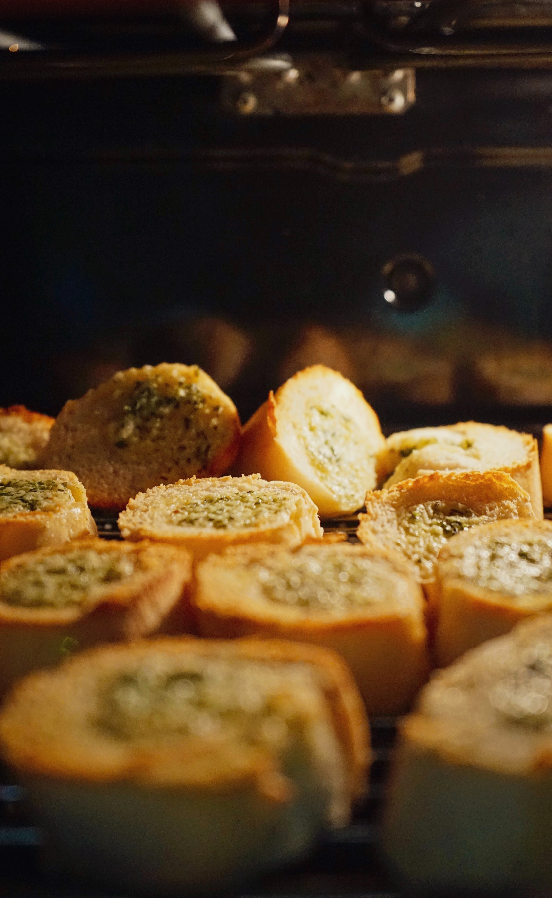

Garlic Bread

Description
No appetizer is as beloved in Italian-American homes and restaurants as garlic bread.
And though garlic bread might seem incredibly easy to make, it actually requires some finesse.
Whether it's best to simply rub the bread with garlic cloves or to chop the garlic, how much oil and Parmesan (or mozzarella) to use, and the way that one slices the bread are all questions up for debate.
Of course, there's no single correct method, but below you'll find a fool-proof recipe for classic, crowd-pleasing garlic bread.
Ingredients
- 1 baguette
- 1/2 cup extra-virgin olive oil
- 4 cloves garlic, grated
- 1/2 cup finely grated Parmesan
- packed 1/4 cup finely chopped parsley
- 1/4 tsp salt
- Freshly ground black pepper
Steps
- Heat oven to 400F.
- Whisk together olive oil, garlic, Parmesan, parsley, salt, and several generous grindings of black pepper in a bowl.
- Use a bread knife to cut 1 inch rounds across the loaf, then arrange these slices evenly on a sheet tray lined with parchment paper.
- Use a brush to evenly spread the oil, garlic, and Parmesan mixture over the arranged bread slices.
- Bake bread until perfectly golden, about 10 minutes.